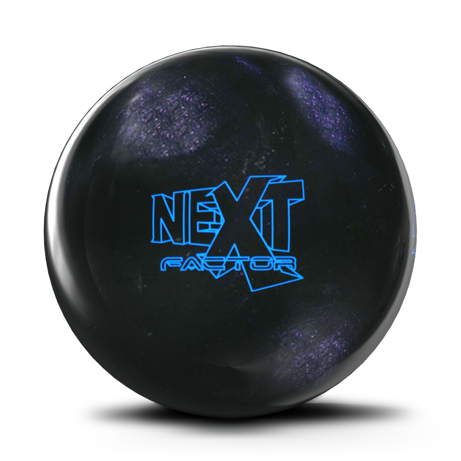
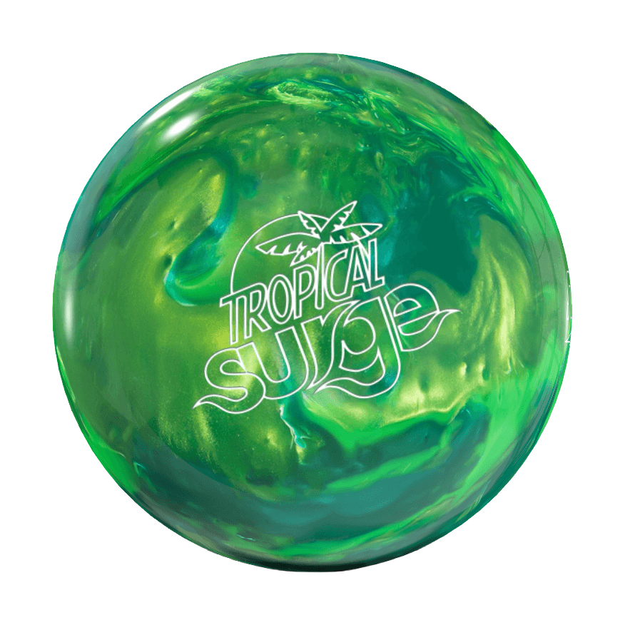
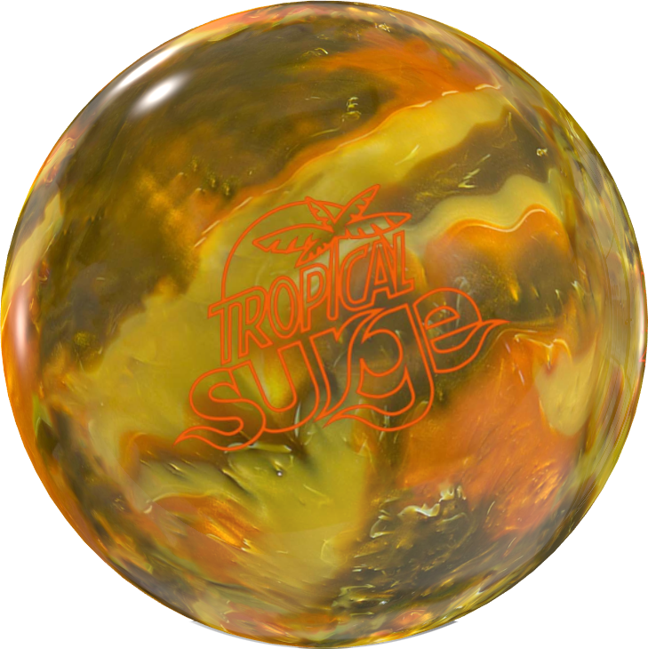
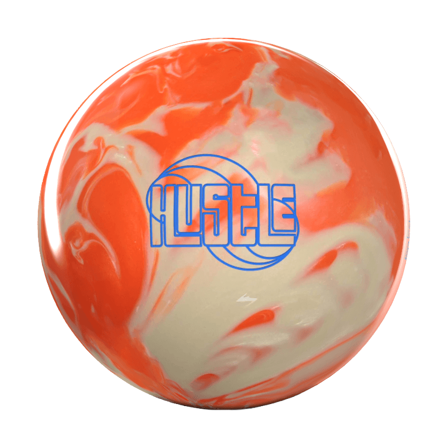
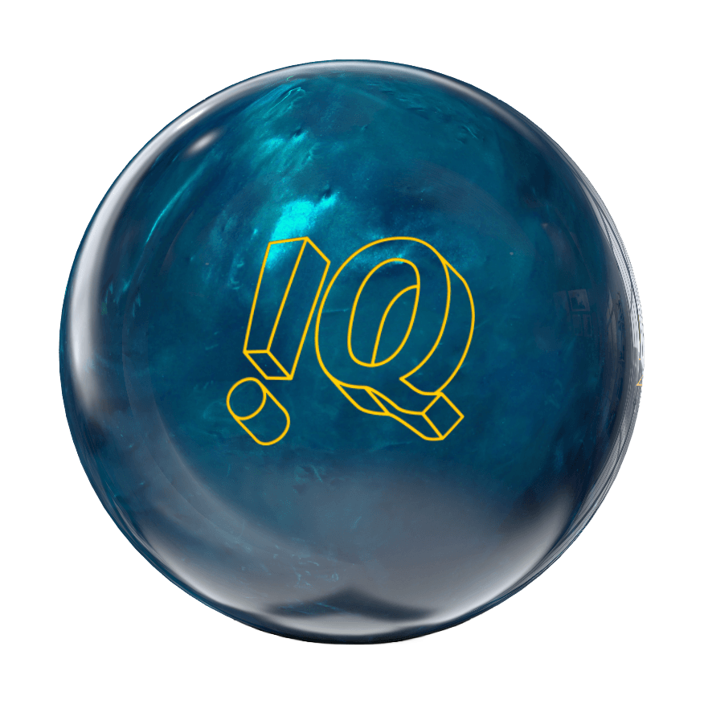
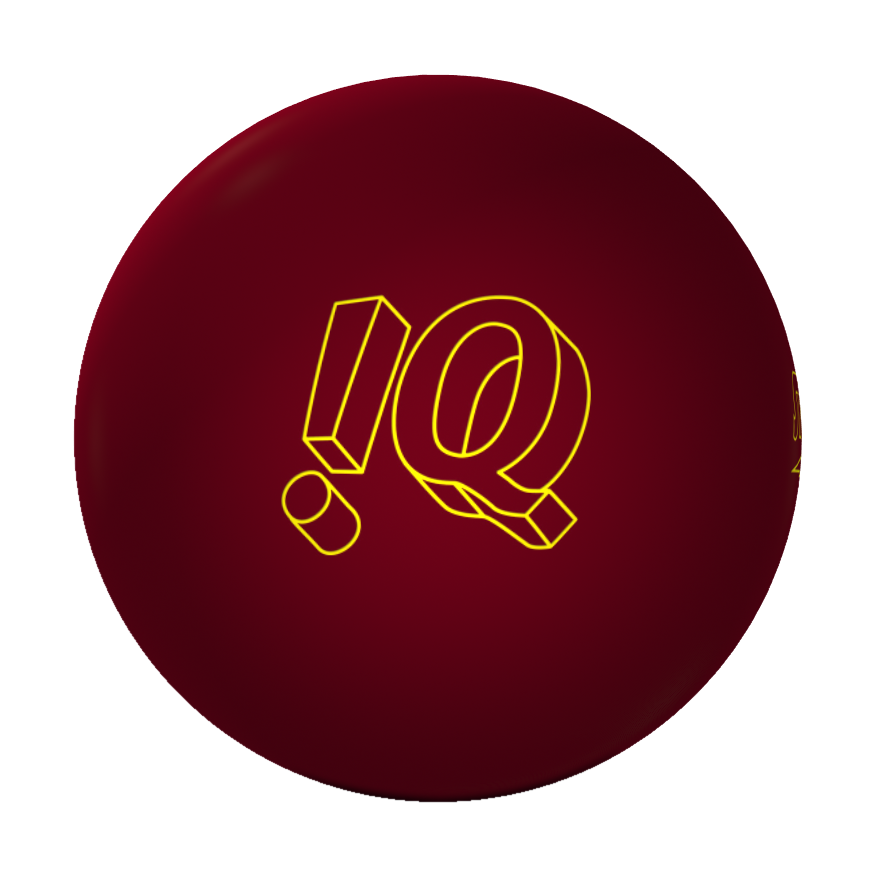
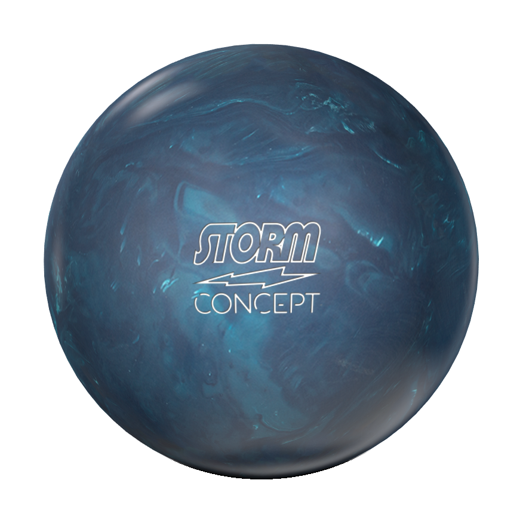
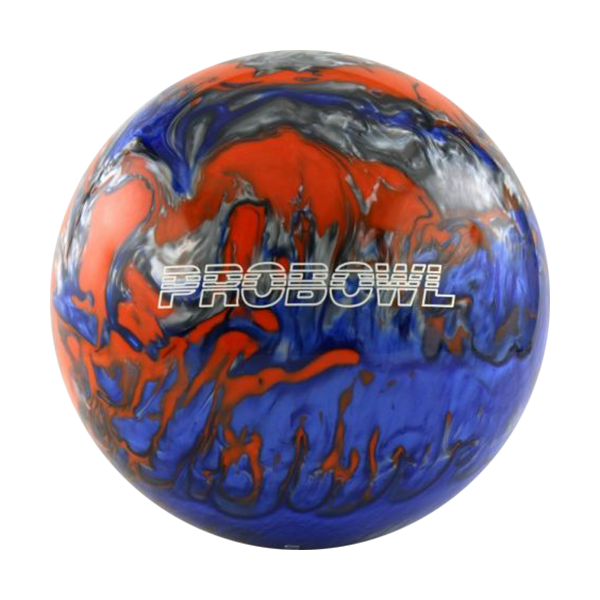

TILBOÐ

STORM
Next Factor
Kúla með R3S Pearl Reactive yfirborði og ósamhverfum RAD-TQ kjarna.
Tilboðsverð 35.000 kr.
Skoða kúluna hjá StormKEILUSJOPPAN
Við bjóðum upp á pöntun á öllum keilukúlum frá Storm, Roto Grip og 900 Global. Einnig bjóðum við upp á valdar kúlur frá Pro Bowl. Við hjálpum þér að finna réttu kúluna fyrir þinn leik og sjáum um pöntun og faglega keilukúluborun.
SKOÐA ALLAR KÚLUR Í BOÐI →VALDAR KÚLUR
Borun er innifalin í öllum verðum. Veittur er 3.000 kr. afsláttur af verðinu við tveggja handa borun. Aukagjald er tekið fyrir útskiptanlega þumla samkvæmt verðskrá.

Kúla með R3S Pearl Reactive yfirborði og ósamhverfum RAD-TQ kjarna.
Tilboðsverð 35.000 kr.
Skoða kúluna hjá Storm
Kúla með E-R1 Solid Reactive yfirborði sem hentar vel á brautir með miðlungs mikilli til mikilli olíu.
43.000 kr.
Skoða kúluna hjá Storm
Frábær fyrsta keilukúla fyrir þá sem vilja ná meiri beygju og þróa leikinn sinn.
35.000 kr.

Byrjendavæn keilukúla fyrir þá sem vilja þróa beygjuna sína.
35.000 kr.

Frábær kúla fyrir keilara sem vill taka næsta skref, fá meiri stjórn og þróa beygjuna sína.
36.000 kr.

Áreiðanleg kúla sem fer lengra niður brautina áður en hún byrjar að beygja sem hentar vel þegar brautaraðstæður breytast.
45.000 kr.

Stöðug og áreiðanleg kúla sem gefur góða stjórn á brautinni. Frábær fyrir keilara sem vilja nákvæmni og fyrirsjáanlega frammistöðu.
45.000 kr.

Öflug og fjölhæf kúla með mjúka og stöðuga hreyfingu. Frábær fyrir keilara sem vilja meiri kraft án þess að missa stjórnina.
47.000 kr.

Öflug kúla fyrir keilara sem vilja meiri hreyfingu og kraft á brautinni. Sterkur kostur þegar þú vilt bæta við öflugri kúlu í safnið.
45.000 kr.

Frábær kúla fyrir leyfaköst þegar nákvæmni skiptir mestu máli. Spot On fæst í nokkrum flottum litasamsetningum.
26.000 kr.

Falleg og áreiðanleg polyester kúla sem hentar vel fyrir leyfaköst. Góður kostur fyrir bæði byrjendur og vana keilara.
26.000 kr.
ALLAR KÚLUR Í BOÐI
Sérðu ekki kúluna sem þú ert að leita að? Veldu kúlu úr vörulistanum og við pöntum draumakúluna fyrir þig.
FINNDU DRAUMAKÚLUNA →